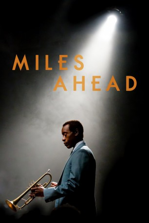
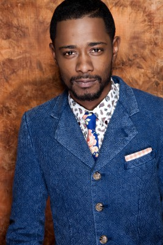
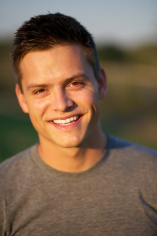

#4896 Miles Ahead
 
 IMDB-Wertung: 6.5 / 10
IMDB-Wertung: 6.5 / 10  Metascore: 0
Metascore: 0 
Im Jahre 1980 ist es schon fünf Jahre her, dass Miles Davis (Don Cheadle) eine Platte veröffentlicht hat. Einst verzückte er die Menschen mit seinem virtuosen Trompetenspiel und eroberte ihre Herzen im Sturm, doch diese Zeit liegt hinter der Jazzlegende. Mittlerweile lebt er zurückgezogen in New York und trauert seiner großen Liebe Frances Taylor (Emayatzy Corinealdi). Drogen und Alkohol sind ständige Begleiter. Doch dann macht das Gerücht die Runde, er habe neue Stücke aufgenommen. Musikjournalist Dave Braden (Ewan McGregor) wittert eine Topstory und will ein Interview mit Davis führen. Erst als der Reporter dem Musiker Kokain besorgt, erklärt sich die Legende dazu bereit. Das Gespräch zwischen den beiden läuft dabei alles andere als konventionell ab…
Jahr: 2015
Dauer: 100 Minuten
FSK: 12
Land: USA Studio: Sony Pictures ClassicsTonspuren: DTS - ,
Untertitel: Deutsch,
Auflösung: 1080p (1920x800) Größe: 7823 MB
Genre: Biographie, Drama, Musik, Liebe
Regisseur: Don Cheadle
Drehbuch: Robert Klane
Soundtrack:
Darsteller:
 Don Cheadle als Miles Davis
Don Cheadle als Miles Davis Ewan McGregor als Dave Braden
Ewan McGregor als Dave Braden- Emayatzy Corinealdi als Frances Taylor
-  Lakeith Stanfield als Junior
- Brian Wolfman Black Bowman als Walter
 Michael Stuhlbarg als Harper
Michael Stuhlbarg als Harper- Christina Marie Karis als Janice
- Morgan Wolk als Erica
-  Austin Lyon als Justin
- Nina Smilow als Tami
 Jeffrey Grover als Gil Evans
Jeffrey Grover als Gil Evans- Drew Lachey als Choreographer
- Herbie Hancock als Live Concert Band
- Wayne Shorter als Live Concert Band
- Gary Clark Jr. als Live Concert Band
- Esperanza Spalding als Live Concert Band
- David Horace Greer als Boxing Cornerman
- Gary Chinn als Police Officer , uncredited
 William Cross als Columbia Records Executive , uncredited
William Cross als Columbia Records Executive , uncredited- Coy DeLuca als Concert Attendee , uncredited
- Jennifer Dior als Boxing Spectator , uncredited
- Michelle Dobrozsi als Vanguard club guest, in / outside , uncredited
- Alvin J. Frazier II als Band Member , uncredited
- Nathaniel Grauwelman als Osaka Fan , uncredited
- Havanna Hagans als College Student / Boxing Spectator , uncredited
- Chris Hahn als Ralph , uncredited
- Chris Hill als Party Goer / Boxing Spectator , uncredited
- Sello Andrew Lyons als Boxing Spectator , uncredited
- Leticia Martinez als Boxing Spectator , uncredited
- K.D. Richardson als Pedestrian , uncredited
- Lare Roberts als Producer , uncredited
- Carly Tamborski als Boxing Spectator , uncredited
- Ty N. Triggs als Boxing Spectator and House Party Attendee , uncredited
- Peggy Warner als Party Guest , uncredited
- Tamica White als Boxing Spectator , uncredited
 William Willet als Concert Attendee , uncredited
William Willet als Concert Attendee , uncredited- Brent Vimtrup als Dieter
- Michael Bath als Bartender
- Reginald Willis als Manager
- Montez Jenkins als Busboy
- Chris Grays als Buddy
- Amber Hawkins als Ava
- Mariah Means als Nora
- Ken Early als George
- Jeremy Dubin als Ken
- Shyra Thomas als George's Secretary
- Brian Phillips als Theo / Engineer
- Marissa Ford als Irene
- Courtis Fuller als Harold
- Chris Bortz als Doorman
Datei: X:\2015(G-M)\Miles Ahead (2015, FSK12, 1920x800).mkv seit 29.11.2016
Festplatte: HD 2015(A-Z)
 Es gibt insgesamt 129 Filme in der Gruppe '2015(G-M)'
Es gibt insgesamt 129 Filme in der Gruppe '2015(G-M)'